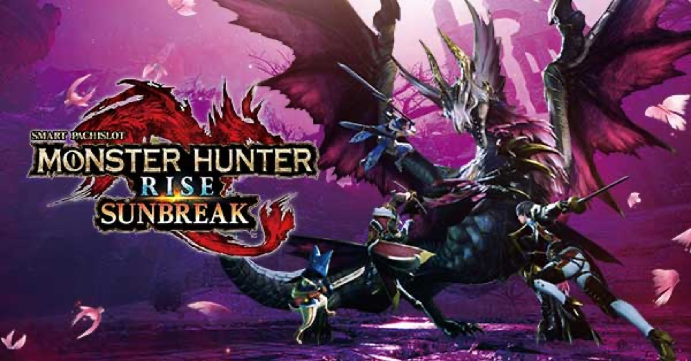

スマスロ モンスターハンターライズ：サンブレイク
BREAK ZONEを突破し、40G＋αのRUSHへ。盟勇クエストで討伐と上乗せを重ねる。
- 導入
- 2026年10月
- メーカー
- アデリオン
- 分類
- パチスロ
主要スペック
BREAK ZONE・アイルー福引・猛焔一閃からサンブレイクRUSHへ。AT中は盟勇参戦、5G以上の盟勇クエスト、モンスター討伐、剥ぎ取りRUSH、キュリアチャンスを経て、勇気の証明と上位ATを目指します。
- BREAK ZONEは5G×最大10セット・設定1のAT期待度37.1%
- 盟勇クエストはST5G＋討伐3G＋決着1G
- 剥ぎ取りRUSHは50・60・70・80%継続、平均上乗せ約86G
スマスロ モンスターハンターライズ：サンブレイクの見どころと計算条件
BREAK ZONE・アイルー福引・猛焔一閃からサンブレイクRUSHへ。AT中は盟勇参戦、5G以上の盟勇クエスト、モンスター討伐、剥ぎ取りRUSH、キュリアチャンスを経て、勇気の証明と上位ATを目指します。
モンハン サンブレイクを数字で早分かり
CZ（BREAK ZONE／アイルー福引）からサンブレイクRUSH、サンブレイクRUSH Gまでの流れと、設定ごとの結果差を固定レートで比較できます。
30秒で分かるモンハン サンブレイク
40G＋αのATで残りゲーム数を管理し、盟勇クエストの討伐報酬と剥ぎ取りRUSHでゲーム数を伸ばして上位ATを狙うハンティング型です。
こんな遊び方に向いている
- BREAK ZONEのセット継続をPUSHで確認したい
- 盟勇クエストでモンスター別の討伐を楽しみたい
- 剥ぎ取りRUSHと上位ATまで一続きで体験したい
遊ぶ前に確認したいこと
- CZ・AT・クエストの主要ゲーム数は公開値
- 13体のモンスターと公開上乗せ種類を収録
- 未公表の当選率は体験用代表値
3つの入口からATへ
BREAK ZONEは1セット5G。1〜4G目に継続率を上げ、5G目のジャッジを繰り返します。10セット継続で猛焔一閃へ進み、設定1のAT期待度は37.1%、完走期待度は4.6%です。
アイルー福引は10G＋α・成功期待度約60%。猛焔一閃直撃を含め、専用画面では選ばれた入口のゲーム数を進め、最後のPUSHでAT当落を開きます。
40G＋αのサンブレイクRUSH
下位ATは初期40G＋α、純増約2.7枚/G。AT中は約1/5.6のキュリア揃い・レア役から盟勇参戦や盟勇クエストを抽選します。
専用画面では残りゲーム数を減らしながら、盟勇クエスト、サンブレイクBONUS、キュリアチャンスの発生を時系列で表示します。
盟勇クエストと13体のモンスター
盟勇クエストはSTパート5G（ヒノエ参戦時6G）、討伐パート3G、決着パート1G。討伐成功で20・30・40・50・100Gまたは剥ぎ取りRUSHを獲得し、STが再セットされます。
リオレウスからメル・ゼナ、怨嗟響めくマガイマガド、アマツマガツチまで13体を収録。モンスターごとの討伐期待度と剥ぎ取りRUSH継続率を結果へ反映します。
剥ぎ取りRUSHとキュリアチャンス
剥ぎ取りRUSHは初回継続保証。20・50・100・200Gの上乗せを50・60・70・80%でループし、平均上乗せは約86Gです。怨嗟響めくマガイマガド討伐時は80%ループ濃厚です。
キュリアチャンスは1セット3GのST型。キュリア揃い・レア役でゲーム数を上乗せして3Gを再セットし、平均上乗せは約187Gです。
勇気の証明から上位ATへ
AT終了時の一部で4Gの『勇気の証明』へ進み、ガイアデルム討伐成功でエンディングを経て上位ATへ。トータル期待度は約40%です。
上位『サンブレイクRUSH G』は初期50G＋α・純増約6.6枚/G。終了時の『滅浄の裁き』は4G・期待度約47%で、成功すれば上位ATへ復帰します。
固定条件と簡略化する範囲
- 約31.9G/50枚・1,000円46枚貸し・5.2枚交換で固定
- 設定1〜6を均等抽選し、CZ・AT初当りは公開設定別値を使用
- CZゲーム数、盟勇クエスト構成、上乗せゲーム数、特化継続率、上位純増を反映
- 未公表の入口選択・盟勇参戦・特化ゾーン当選率は体験用代表値
- 19,000枚到達時はコンプリート表示
平均Gと投資目安の計算
掲載するサンブレイクRUSH初当り約1/349.9は設定1基準です。当サイトでは50枚あたり31.9G、1,000円46枚貸しの固定条件から、設定1基準の平均投資目安を約11,900円と計算します。
シミュレーターでは設定1〜6を均等抽選します。設定1〜6で公開されている初当り値を個別に使います。公開されていない特化ゾーン・上位到達率の設定差は加えません。 換金は5.2枚交換で固定し、結果とランキングに設定を表示します。
シミュレーション結果の見方
当るまでCZ（BREAK ZONE／アイルー福引）・サンブレイクRUSHまでのゲーム数
設定設定1・2・3・4・5・6から抽選された今回の設定
上位到達勇気の証明とサンブレイクRUSH Gへの到達
最終収支差枚と5.2枚交換の収支目安
結果は自動で「マイ記録」に保存され、同じ機種を何回試したか、最高収支、勝率をあとから確認できます。
簡易シミュレーターについて
CZ（BREAK ZONE／アイルー福引）・サンブレイクRUSH・サンブレイクRUSH Gの流れを固定条件で体験できます。JavaScriptを有効にすると、この位置にシミュレーター、演出、マイ記録、機種別ランキングが表示されます。
結果は娯楽・確率理解のための参考表示です。金銭的価値や交換価値はなく、実際の勝敗や収支を保証しません。18歳未満の方の利用はお控えください。
モンハン サンブレイクのよくある質問
モンハン サンブレイクはどんな台？
BREAK ZONE・アイルー福引・猛焔一閃からサンブレイクRUSHへ。 BREAK ZONEは5G×最大10セット・設定1のAT期待度37.1%が主な確認ポイントです。
モンハン サンブレイクの平均投資目安は？
設定1基準のサンブレイクRUSH初当り約1/349.9と、50枚あたり31.9G・46枚貸しの固定条件から、平均11,900円を目安として表示します。実際の設定や遊技状況で結果は変わります。
設定とゲームの流れはどう抽選する？
開始時に設定1・2・3・4・5・6から1つを均等抽選し、CZ（BREAK ZONE／アイルー福引）、サンブレイクRUSH、勇気の証明、サンブレイクRUSH Gの順で到達を判定します。設定は最終結果とランキングに表示します。
収支はどう計算する？
1,000円46枚貸し・5.2枚交換の固定条件で投資、換金、収支目安を計算します。実店舗の再プレイ、持ちメダル、端数処理は含みません。